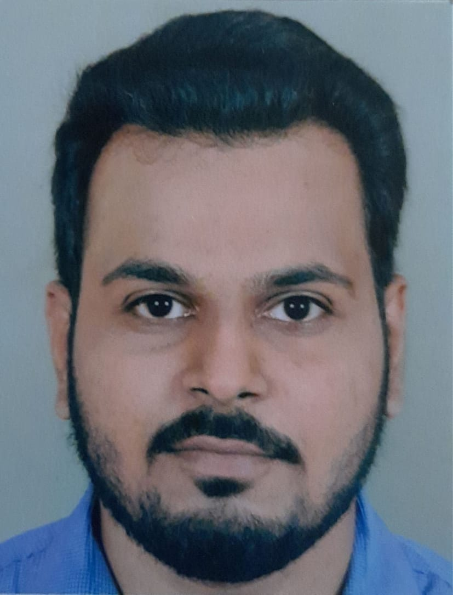

|  |
Basavraj DevpujeGeburtsdatum: 04/10/1997 | Staatsangehörigkeit: indisch | Geschlecht: Männlich | |
Über mich : Ich bin Student und studiere Master an der Hochschule Offenburg. Ich suche einen Mini oder Teilzeitjob.
Bitte lassen Sie mich wissen, wenn Sie eine freie Stelle haben.
14/10/2020 – AKTUELL – Badstraße 24, Offenburg, Deutschland
MASTER-STUDEINGANG (COMMUNICATION AND MEDIA ENGINEERING) – Hochschule Offenburg
04/07/2015 – 18/07/2019 – Ganeshkhind Road, Ganeshkhind, Pune, Pune, Indien
BACHELOR IM INGENIEURWESEN (INFORMATIK) – Savitribai Phule Pune University (SPPU)
Muttersprache(n): MARATHI
Weitere Sprache(n):
| Hören | Lesen | Zusammenhängendes Sprechen |
An Gesprächen teilnehmen |
Schreiben | ||||
|---|---|---|---|---|---|---|---|---|
| Deutsch A1 | A1 | A1 | A1 | A1 | A1 | |||
| Englisch | C1 | B2 | B2 | B2 | B2 |
Stufen: A1 und A2: Elementar; B1 und B2: Selbstständig; C1 und C2: Kompetent
Microsoft Office | Google Docs | Zoom
pünktlich Termine erstellen und einhalten. | Organisations- und Planungsfähigkeiten